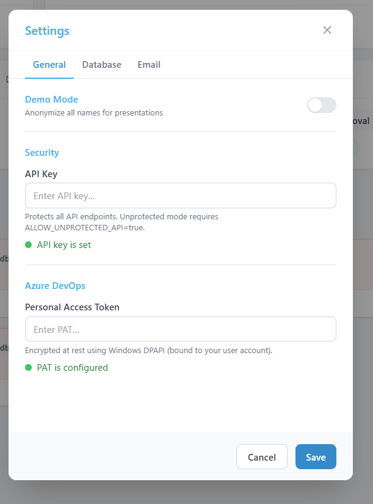

Settings
The Settings panel lets you manage your connections and security. Open it by clicking the gear icon (⚙) in the top-right corner of any screen.

The Settings modal.
Sections
Password (API Key)
This is the password you use to log in to the dashboard. You can change it here at any time. After changing it, you will need to use the new password the next time you log in.
Azure DevOps Connection (PAT)
Your Personal Access Token allows DevOps InControl to read data from Azure DevOps. A green PAT OK indicator in the header bar means the connection is active.
If you need to update or rotate your PAT:
- Create a new PAT in Azure DevOps (see First-Time Setup for instructions).
- Paste it into the PAT field in Settings.
- Click Save.
Database Servers
DevOps InControl can connect to up to three database servers for the DB Monitor feature. For each server you can configure:
| Field | Description |
|---|---|
| Server address | The hostname or IP address of the database server. |
| Port | The connection port (default: 1433 for SQL Server, 5432 for PostgreSQL). |
| Username | A database user with read access. |
| Password | The password for that user. |
| Driver | Choose SQL Server or PostgreSQL. |
After entering the details, click Test Connection to verify that DevOps InControl can reach the server.
Email Sender
Some features (like sending reminders for missing estimates) can send emails. Enter the "From" email address here. The mail server (SMTP) is configured by your administrator.
Demo Mode
When enabled, all names, project titles, and other identifying information are anonymised. This is useful when presenting the dashboard to an audience without revealing real data.